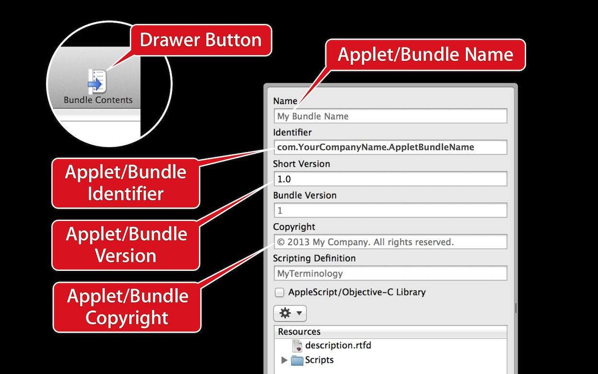
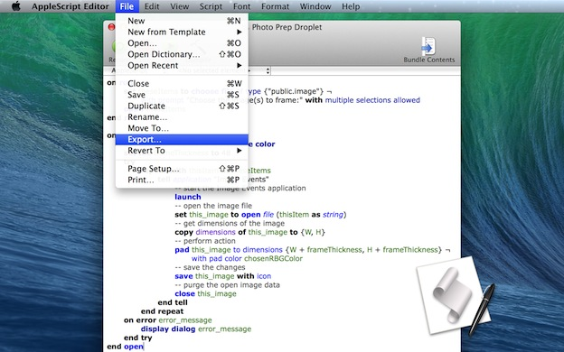
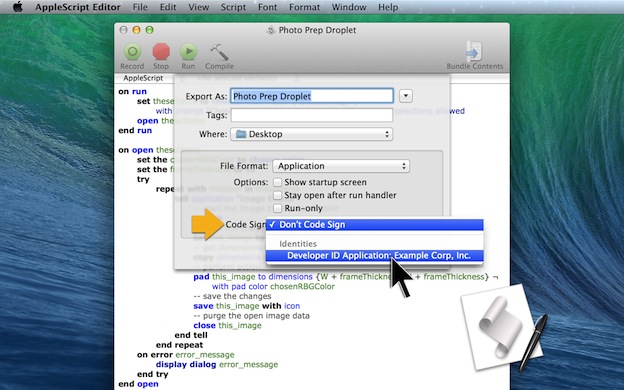

A requirement for creating a signed application|applet|droplet|script bundle, is for the item to possess a unique identifier or Bundle ID. In the AppleScript Editor application, this can easily accomplished by entering the appropriate information in the parameter input fields located in the item’s contents drawer.

The essential properties for an exported applet|bundle" displaywidth="1248" displayheight="780" onclick="void(0);lightboxThisImage(this);">Follow these steps:
DO THIS ►To access the parameters for the applet|bundle, press the Bundle Contents button located at the top right of the script window.
DO THIS ►In the Name field, enter the name of the applet|bundle. Note that name extensions, such as “app” or “scptd” are not included.
DO THIS ►In the Identifier field, enter the unique bundle identifier for this item. The bundle identifier string identifies your applet|bundle to the system. This string must be a uniform type identifier (UTI) that contains only alphanumeric (A-Z,a-z,0-9), hyphen (-), and period (.) characters. The string should also be in reverse-DNS format.
For example, if your company’s domain is Ajax.com and you create an applet|bundle named Hello, you could assign the string com.Ajax.Hello as your applet|bundle’s bundle identifier. If you don’t have or work for a company, use your developer name as a replacement. The bundle identifier is used in validating the application signature.
Apple documentation regarding bundles can be viewed here.
DO THIS ►To enable your clients to ensure they are using the latest version our your automation tool, enter the version number of your applet|bundle in the Short Version input field; for example: 1.4. An item’s version number can be viewed in the Finder information window for the selected applet|bundle.
DO THIS ►Enter the copyright information for the applet|bundle in the Copyright input field.
With your developer signing certificate installed in Keychain, and the appropriate metadata entered in your applet or bundle, you are ready to export a signed version of the applet|bundle.

DO THIS ►With the applet|bundle file open in the AppleScript Editor, select the Export… menu option from the File menu. (⬆ see above)
The standard save sheet will drop down over the script window (⬇ see below) . Note the addition of a Code Sign popup menu. By default, the popup menu is set to the option titled Don’t Code Sign.

DO THIS ►Click on the Code Sign popup menu and select your developer signing from the drop-down menu.
DO THIS ►With your developer signature chosen, select the destination for the file and then click the Export button.
A signed version of the applet|bundle will be saved to disk. You can now distribute the exported version to others to use on their computers running GateKeeper.